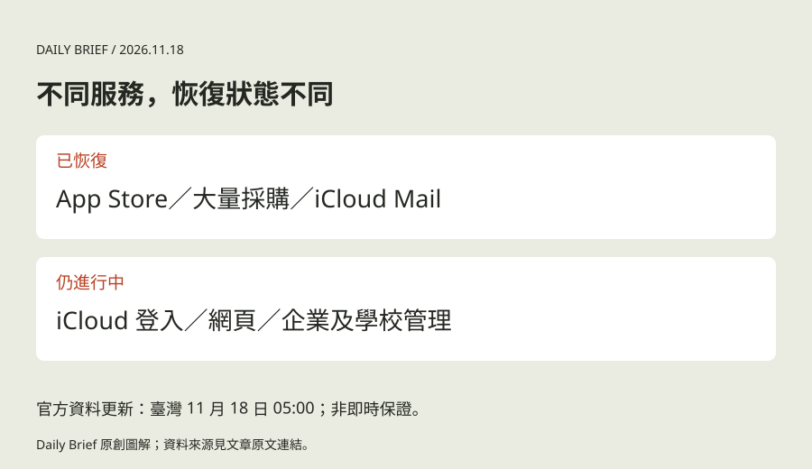

TECHNOLOGY / THE ESSENTIALS
Apple 多項服務故障，App Store 恢復不代表 iCloud 全部正常
收錄於 2026-11-18 日報 · Apple 官方狀態資料
已確認的重點
- Apple 官方狀態資料最新標示 11 月 17 日 13:00 PST（臺灣 18 日 05:00）。App Store／大量採購服務事故為 08:45–12:00 PST，即臺灣 00:45–04:00，已列 resolved。
- 同份資料的 iCloud Account & Sign In、iCloud 網頁服務、Apple Business 及 Apple School Manager 仍列 ongoing；iCloud Mail 已標示 resolved。不同項目不可用一個總狀態概括。
如何理解與應對
- 若登入或企業管理仍有問題，先核對所用服務與官方新更新；本次不把網友通報的 Apple Pay 問題當作官方確認，也未從狀態資料證實內部根因或與其他公司事故有關。

原文與查核
以上為整理與解讀，重要細節請回到原文核對。
- Apple 官方狀態資料 ↗發布 2026-11-17 · 查核 2026-11-18T05:07:20+08:00